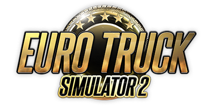

SUPORTE ATIVO
INTELIGÊNCIA VIVA NA ESTRADA
Ela vive a cabine com você.
Sua assistente inteligente acompanha o caminhão, entende a viagem e transforma cada quilômetro em uma experiência mais humana.
Voz naturalConversa em tempo real
TelemetriaConectada ao caminhão
ETS2Suporte ativo